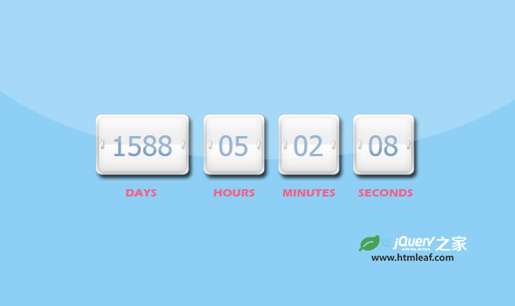

基于HTML5 time元素的倒计时jquery插件
Unobtrusive and easily skinable countdown jQuery plugin
jQuery之家
返回下载页
2017-12-08T17:47:00+0100
2017-12-08T08:47:00-0800
2017-12-08T16:47:00+0000
24h00m59s
4h 18m 3s
00:01
12:30:39.929
P2DT20H00M10S
600 days, 3:59:12
如果你喜欢这个插件，那么你可能也喜欢:
功能齐全的jQuery倒计时插件

简单时尚的jQuery倒计时插件